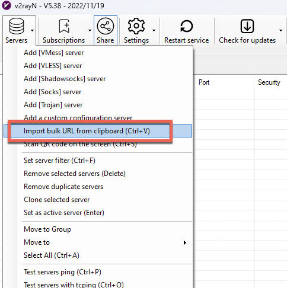
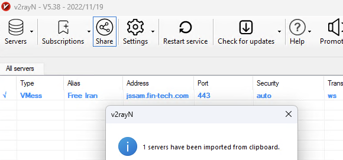
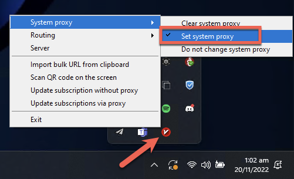
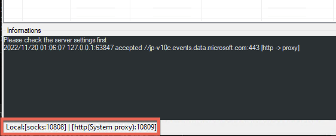

Windows#
Installation#
1. Download and extract V2rayN for Windows
2. Run V2rayN.exe
Configuration#
1. Copy the below URI to clipboard for the respective proxy service you are configuring:
Clipboard
Select icon on right hand side of text to copy to clipboard
vmess://ew0KICAidiI6ICIyIiwNCiAgInBzIjogIkZyZWUgSXJhbiIsDQogICJhZGQiOiAianNzYW0uZmluLXRlY2guY29tIiwNCiAgInBvcnQiOiAiNDQzIiwNCiAgImlkIjogIjExMzAzZGJlLTBmMDktNGE0Yy1hM2ZmLTdkMTlhMDkyMzhiZCIsDQogICJhaWQiOiAiMCIsDQogICJzY3kiOiAiYXV0byIsDQogICJuZXQiOiAid3MiLA0KICAidHlwZSI6ICJub25lIiwNCiAgImhvc3QiOiAianNzYW0uZmluLXRlY2guY29tIiwNCiAgInBhdGgiOiAiL2NvbnRyb2wiLA0KICAidGxzIjogInRscyIsDQogICJzbmkiOiAianNzYW0uZmluLXRlY2guY29tIiwNCiAgImFscG4iOiAiIg0KfQ==
vmess://eyJhZGQiOiJiYWJvLjEzMzcuY3giLCJhaWQiOiIwIiwiYWxwbiI6IiIsImhvc3QiOiJiYWJvLjEzMzcuY3giLCJpZCI6ImVjNjFkNzQxLWQ5NWQtNGM2Ni1iMzU2LTBlZDg5NzgzMTllOSIsIm5ldCI6IndzIiwicGF0aCI6Ii9jb250cm9sLyIsInBvcnQiOiI0NDMiLCJwcyI6IlBvd2VyLVZNRVNTIiwic2N5IjoiYXV0byIsInNuaSI6ImJhYm8uMTMzNy5jeCIsInRscyI6InRscyIsInR5cGUiOiIiLCJ2IjoiMiJ9
2. From the V2rayN application, select Servers -> Import bulk URL from clipboard:

3. Successful import should be confirmed as per below:

Global System Proxy#
To enable the proxy system-wide, right-click on the V2rayN application in the System Tray, and select System Proxy -> Set System Proxy:

Note
To disable the Windows-wide proxy, use the same steps but select Clear System Proxy
 Per-Application Proxy#
Per-Application Proxy#
Instead of system-wide use, to enable use of the proxy on a per-application basis (e.g., for a specific web browser), manually configure the local machine proxy that V2rayN creates using server 127.0.0.1 and the SOCKS5 or HTTP port shown in the bottom of the V2ray application window.
Note
Examples shown below use port 10808 for SOCKS5 and port 10809 for HTTP proxy:

Firefox Example
To configure only the Firefox browser to send traffic via the proxy, apply the relevant settings in the browser Settings -> Proxy Settings:
Test Connection#
To check if the proxy is properly configured and connected, you can test your connection below:
Disconnection#
To disconnect from the service, select Clear System Proxy from the System Tray before closing the V2RayN application.
Alternatively, if using per-application proxy configuration, remove the configuration from required applications (such as Firefox in the previous example).